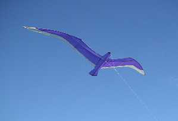
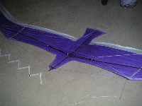
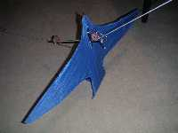

| Accueil | Albatros | Spiralier, Messager | Megoel | Indoor | Condor | Albatros2 | Demoiselle | P |

Le Spiralier est né de l'idée de faire un cerf-volant pour vent léger, mais en éliminant les défauts esthétiques de l'Oiseau Light. Initialement, je l'ai conçu pour qu'il puisse spiraler en arrivant en haut de la fenêtre. Il a marché un peu comme cela (difficilement) mais il fallait beaucoup s'employer à ramener, puis relâcher du fil rapidement et suffisamment. Faute de quoi, dès que le fil se retendait, le Spiralier s'éloignait tout droit sous le vent et se plantait, ce qui m'a vite lassé. Je n'ai gardé que le nom.
Il est un peu plus grand et nettement plus lourd que l'Oiseau Light, mais me plaît beaucoup plus esthétiquement. La structure carbone est constituée d'un corps, et de 2 longerons d'aile qui poussent sur les tubes de bord d'attaque. Une barre tranverse avec son tendeur vertical limite le dièdre. Un système de tendeurs en double Y sur le dessus permet de régler et de bien garder en vol la même incidence sur les deux ailes.
Ce Messager (en forme d'oiseau, oui) est assez particulier. Par exemple, le fil le traverse, et il est verrouillé par un crochet en haut et non par une coulisse qui actionne un crochet en bas. Il marche bien comme ça (enfin, ça dépend un peu du vent), mais ces différences ont surtout une raison que j'expliquerai plus tard si j'arrive à faire ce que je veux. Mais je ne tiens pas à me mettre la pression et à me voir demander "Mais, Maxime, il ne fait pas comme tu as dit sur ton site ?". De toutes façons, mes essais ont déjà montré que des modifs profondes seront nécessaires. A suivre, donc...